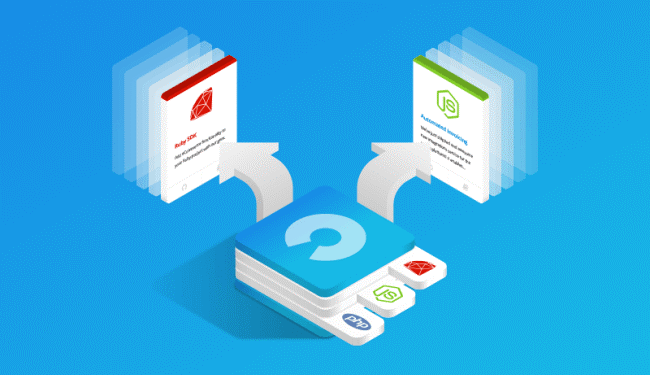

E-commerce open source
Es una solución flexible y escalable con la que se pueden desarrollar prácticamente todo tipo de proyectos e-Commerce. Ofrece muchas funcionalidades entre las que destacan especialmente la gran flexibilidad en el diseño y un panel de control. Para tocar el corazón de Magento es importante tener los suficientes conocimientos ya que cualquier error afectará seguro a la aplicación y a su rendimiento. Su curva de aprendizaje es elevada. Es una opción muy complicada para una pequeña empresa. Sólo asumible por medianas empresas dispuestas a invertir fuerte en el e-Commerce. Ventajas de este open source: • Es 100% nativo eCommerce enfocada a la venta online 100%. • Ofrece una multitud de funcionalidades que no requieren desarrollo extra. • Se trata de un sistema más estable y robusto que los demás. • Sus versiones están 100% testeadas antes de ver la luz, no deberíamos tener grandes problemas a la hora de actualizar nuestra versión de Magento a una versión superior. Cosa que no se puede decir de sus rivales. • Bien preparado para el SEO. • El sistema multitienda y multiidiomas de Magento funciona de maravilla. • Como Presta shop, permite conexión con ERP, CRM y software externos mediante webservices. Desventajas: • La comunidad Magento no es muy amplia en España. • Es más complicado encontrar personal cualificado y experto en Magento. • Los módulos (para funcionalidades extra) y las plantillas son bastante más caras que en los demás CMS. • La gestión del catálogo es un poco más compleja que en Prestashop y requiere algo de formación previa. • Finalmente, Magento es tan robusto que es más que recomendable la contratación de un servidor VPS o dedicado para su correcto funcionamiento. Magento no es un CMS para testear un mercado. Sólo te saldrá rentable con facturación alta de la tienda. Sí la previsión de facturación que tenemos no es alta, olvidarnos de Magento. Un secreto, en la mayoría de los proyectos nuevos no lo es al menos en los primeros años. Lo mínimo que requiere un buen hosting VPS y mejor aún un buen servidor dedicado administrado, reservad 1500 euros anuales.